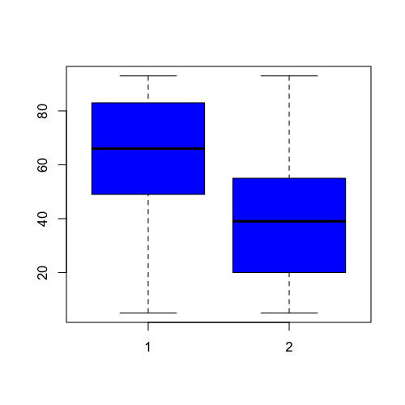
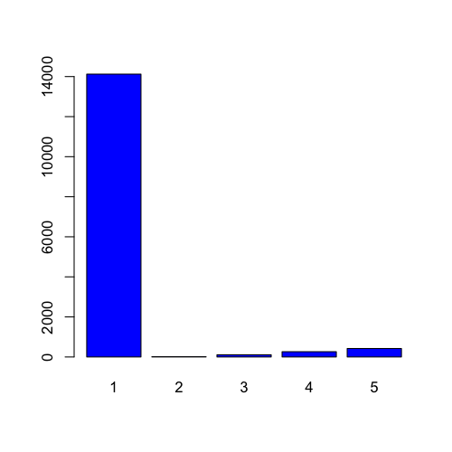
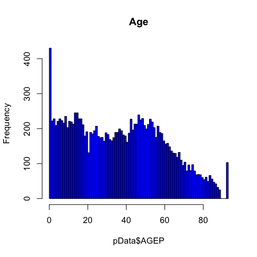
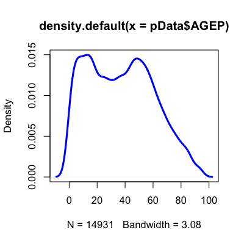
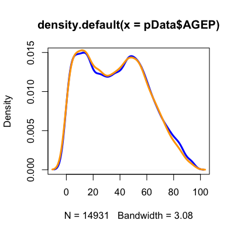

- To understand data properties
- To find patterns in data
- To suggest modeling strategies
- To "debug" analyses
- To communicate results
Exploratory graphs
Roger D. Peng, Associate Professor of Biostatistics
Johns Hopkins Bloomberg School of Public Health
Why do we use graphs in data analysis?
Exploratory graphs
To understand data properties To find patterns in data To suggest modeling strategies To "debug" analyses - To communicate results
Characteristics of exploratory graphs
- They are made quickly
- A large number are made
- The goal is for personal understanding
- Axes/legends are generally cleaned up
- Color/size are primarily used for information
Background - perceptual tasks

Position versus length

Position versus length - results

Position versus angle

Position versus angle - results

More experimental results

Graphical Perception and Graphical Methods for Analyzing Scientific Data
Summary
- Use common scales when possible
- When possible use position comparisons
- Angle comparisons are frequently hard to interpret (no piecharts!)
- No 3-D barcharts. Please.
Housing data

pData <- read.csv("./data/ss06pid.csv")
Boxplots
Important parameters: col,varwidth,names,horizontal
boxplot(pData$AGEP, col="blue")

Boxplots
pData <- transform(pData, DDRS = factor(DDRS))
boxplot(AGEP ~ DDRS, data = pData, col = "blue")

Boxplots
boxplot(AGEP ~ DDRS, data = pData, col = c("blue", "orange"),
names = c("yes", "no"), varwidth = TRUE)

Barplots
barplot(table(pData$CIT), col = "blue")

Histograms
Important parameters: breaks,freq,col,xlab,ylab, xlim, _ylim ,main
hist(pData$AGEP, col = "blue")

Histograms
hist(pData$AGEP, col = "blue", breaks = 100, main = "Age")

Density plots
Important parameters (to plot): col,lwd,xlab,ylab,xlim,ylim
dens <- density(pData$AGEP)
plot(dens, lwd = 3, col = "blue")

Density plots - multiple distributions
dens <- density(pData$AGEP)
densMales <- density(pData$AGEP[which(pData$SEX == 1)])
plot(dens, lwd = 3, col = "blue")
lines(densMales, lwd = 3, col = "orange")
